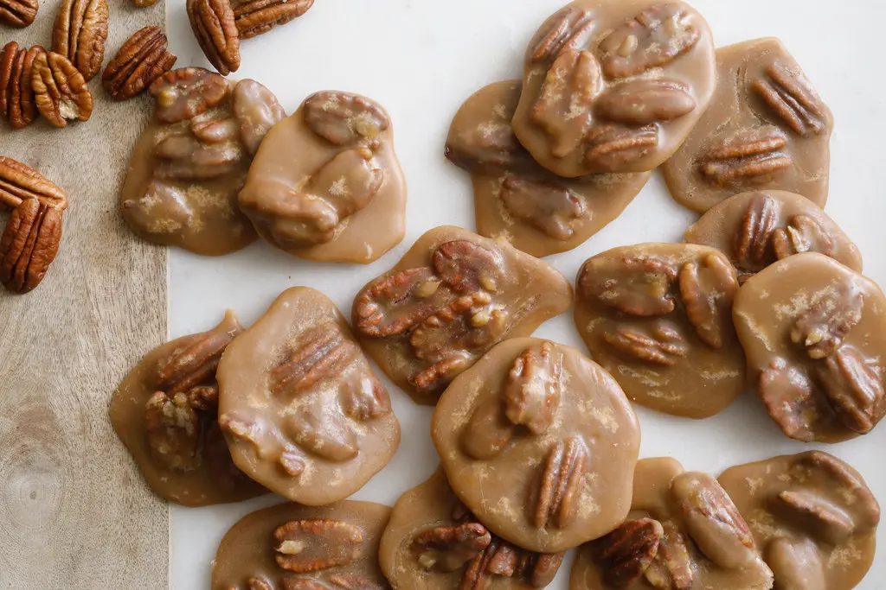

Praline Recipe

Creamy Pralines
As you spoon the warm praline mixture onto the parchment paper, work quickly. It dries in a snap. Some have been known to sprinkle the tops of the wet pralines with flaky sea salt before they harden.
Ingredients
- 1 cup firmly packed dark brown sugar
- 1 cup granulated sugar
- 1/2 cup evaporated milk
- 1 cup pecan halves
- 2 Tbsp unsalted butter
- 1.5 tsp vanilla extraxct
Steps
- In a deep, 2-quart heavy saucepan, combine the brown sugar, granulated sugar and milk and cook over medium heat, stirring constantly until the sugars melt. Cook, stirring frequently,
to keep mixture from bubbling over, until a candy thermometer reads 228 degrees. Add the pecans and butter and stir until butter melts. Continue cooking until thermometer reaches 232 degrees.
Remove from heat and stir in the vanilla. Allow to cool, stirring occasionally, until the mixture loses some of its gloss.
- Spoon the praline mixture onto parchment paper, forming 24 thin patties, each about 2 inches in diameter. Let cool at least a half hour. Wrap individually in wax-paper squares.